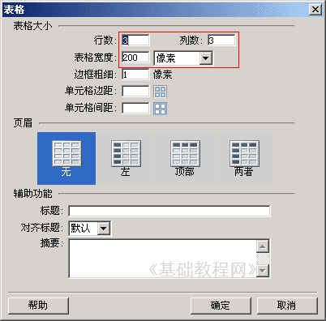
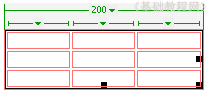
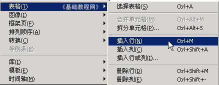

Dreamweaver 8 基础入门教程
八、插入表格 返回
这一节我们来学习如何在页面插入表格，利用表格可以很好地布置页面，在表格单元中可以放文字、图片、视频等等，每个单元都是一个独立的区域，下面我们来看一个练习；
1、启动Dreamweaver
1）点击“开始－所有程序－Macromedia－Macromedia Dreamweaver 8”， ；
；
2）在中间的“创建新项目”中点第一个 HTML，打开一个空白文档，把标题改为“插入表格”；

3）点“文件－保存”命令，以 chrbg 为文件名保存文件，保存位置在建立的站点中；
2、插入表格
1）点菜单“插入－表格”命令，出来一个对话框，一般修改上面的两行，表格的行列数和宽度；

2）点“确定”即可插入一个3×3的表格，横着的是行，竖着的是列，每一个小格叫单元格；
| 第二列 | 第三列 | |
| 第二行 | ||
| 第三行 |
3）在表格的边框上点一下，可以选中整个表格，下面的属性面板中也出来表格的各个选项，边框为0的时候不显示边框线；

上边绿色的三角里头有一个命令菜单，可以进行相关的操作；
4）在一个单元格里点一下以后，下面的属性面板显示单元格的选项，
点菜单里的“修改－表格”命令，里头可以插入一个行、一个列等等；

3、练习：插入一个3×3的表格，在每个格子里输入一个成语；
保存一下文件，点预览按钮，看一下表格的效果；
本节学习了插入视频文件的基本方法，注意param标签的用法，如果你成功地理解并完成了练习，请继续学习下一课内容；
本教程由86团学校TeliuTe制作|著作权所有
基础教程网：http://teliute.org/
美丽的校园……
转载和引用本站内容，请保留作者和本站链接。